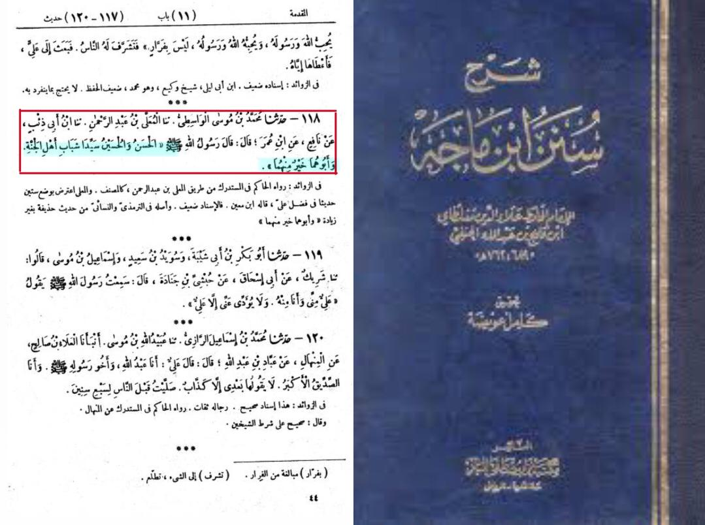
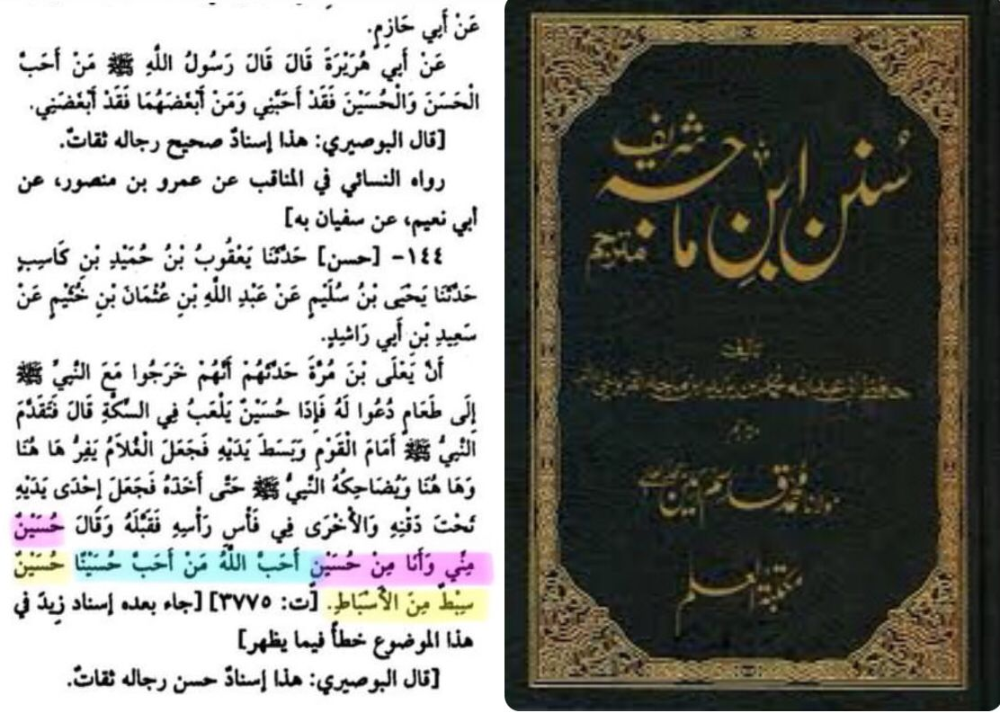

Virtues of Imam Husayn عليه السلام
> It was narrated that Abdullah Ibn 'Umar said:
"The Messenger of Allah ﷺ said: 'Hasan and Husain will be the leaders of the youth of Paradise, and their father is better than them."
Sunan Ibn Majah #118
This Hadith proves that that as Imam Husayn's mother is the Queen of the women in paradise, similarly, He is the Prince of the youth in paradise

It was narrated from Sa'eed bin Abu Rashid that Ya'la bin Murrah told them that:
They had gone out with the Prophet to a meal to which they had been invited, and Husain was there playing in the street. The Prophet came in front of the people and stretched out his hands, and the child started to run here and there. The Prophet made him laugh until he caught him, then he put one hand under his chin and the other on his head and kissed him, and said, "Husain is part of me and I am part of him. May Allah love those who love Husain. Husain is a tribe among tribes."
Sunan Ibn Majah #114
This Hadith shows the affection of Rasoolallahﷺ towards His grandson, Imam Hussayn. This also proves that Imam Al Hussayn will be one of the distinguished descendents of Rasoolallahﷺ
And Ibn Abi Al-Dunya narrated it on the authority of Abu Al-Walid on the authority of Khalid bin Yazid bin Asad on the authority of Ammar Al-Dahni on the authority of Jaafar, who said:
When Al-Hussein’s head was placed in his killer's hands, and Abu Barzah was with him and while Imam Husayn's killer was poking him with a stick, he said to him: “Raise it up.” for I saw the Messenger of Allah may Allah bless him and grant him peace, kiss it (his head).
Al Bidaya Wan Nihaya 6/192